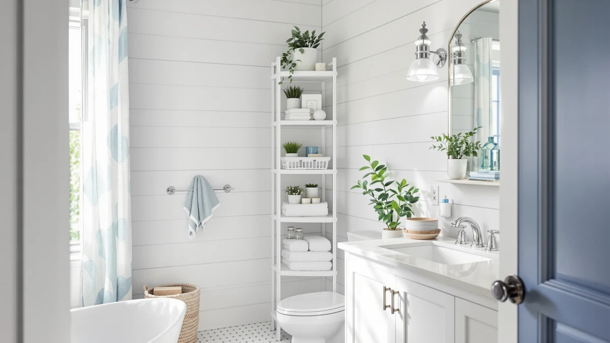

The Best Corner Bathroom Storages (2026)
Prices and picks verified as of September 2026. Independent, reader-supported reviews.


Quick Answer
The VASAGLE Storage Cabinet Storage Organizer is the best corner bathroom storage for most people, built with an 11.8-inch square footprint specifically for the dead space beside a toilet or sink. If your corner is tighter, the Hzuaneri Bathroom Storage Cabinet Small fits a 7.9-inch gap, and small organizers like the Tbestmax Qtips Holder keep the open shelf on top from turning into clutter.
Our pick: VASAGLE Storage Cabinet Storage Organizer, $69.99 Check Price on Amazon
Bottom line: our top pick is the VASAGLE Storage Cabinet at $59.48. The best budget option is the Tbestmax 3 Pack Qtips Holder Bathroom Container at $9.99.
Things to Know Before You Buy
- Corner-shaped and corner-adjacent are different products. The VASAGLE and Hzuaneri cabinets are built with a square back specifically for a 90-degree wall gap. The rest of this list, the qtip holders, the mason jars, the vanity organizer, are small-item organizers that sit well on top of a corner cabinet but are not corner-shaped themselves.
- A few inches of footprint decide which cabinet fits. The Hzuaneri needs only 7.9 by 7.9 inches, while the VASAGLE needs 11.8 by 11.8 inches for its extra height and two drawers. Measure your actual corner gap before choosing between them.
- You're solving two separate problems. A cabinet adds shelf space where there was none. Organizers like the Tbestmax holders and the Amolliar jars keep that shelf from turning into loose bottles and cotton swabs. Most bathrooms need at least one of each.
- Price tracks capacity, not size alone. The Tbestmax and Amolliar organizers run under $13, while the two full corner cabinets cost $34.99 and $69.99. The cabinets cost more because they solve the bigger problem of missing shelf space.
The best corner bathroom storages solve a problem square footage alone can't fix: the dead triangle of space where two walls meet in a small bathroom, usually beside a toilet, a sink, or a doorway. Most cabinets are built rectangular and end up wasting that corner or blocking the walkway if you force them into it. A piece designed with a square or angled back tucks into that gap instead, turning wasted space into real shelving without making the room feel any tighter.
After comparing seven corner-friendly pieces on footprint, capacity, and price, the VASAGLE Storage Cabinet Storage Organizer ($69.99) is the one we'd recommend to most people first. Its 11.8-by-11.8-inch base was built for a corner, and the mix of an open shelf with two enclosed drawers gives you room to display daily items while hiding the rest. If your corner is even tighter, the Hzuaneri Bathroom Storage Cabinet Small ($34.99) needs only a 7.9-by-7.9-inch footprint and costs less, making it our runner-up for powder rooms and cramped layouts.
A cabinet only solves half the problem, though. Once you have shelf space, you need something to keep it from filling up with loose bottles and cotton swabs. That's why we also compared five small organizers built for exactly that job: the Tbestmax Qtips Holder and Tbestmax Qtip Holder jar sets, the Amolliar Glass Mason Jar pair, the BDBDYEAY Bathroom Countertop Organizer, and the Besti Rustic Vanity Organizer. Below, we break down what each piece does best, what it costs to own, and where it falls short.
Why You Should Trust Us
I'm Ilane Tall, and I cover bathroom storage and organization for Best Bathroom Storage. The question I keep coming back to is a simple one: how do you fit more into a small bathroom, corners included, without the room starting to feel like a closet? I look at storage the way someone living with it every day does, paying attention to footprint, how a shelf behaves once it's full, and whether a "corner" product is actually shaped for a corner or only marketed that way.
For this guide on the best corner bathroom storages, I focused on pieces that either fit a true 90-degree wall gap or complement one. I have no relationship with any of these brands. We earn a commission if you buy through our links, but that has no bearing on which products we recommend or what we say about their drawbacks. When a pick has a real weakness, you'll read about it here.
How We Picked
We started by separating the two things people search for under "corner bathroom storage." Some want a freestanding cabinet with a square back built to fill an empty corner, which is where the VASAGLE and the Hzuaneri come in. Others already have the shelf and want small, corner-friendly organizers to keep it tidy, which covers the qtip holders, the mason jars, and the countertop and vanity organizers in this guide. We included both, since in practice most bathrooms need one of each.
From there we screened on footprint, materials, and price. We prioritized pieces with a genuine corner-shaped base or a compact tabletop footprint that wouldn't overwhelm a small shelf, materials that hold up to bathroom humidity, and prices that matched what each piece adds in usable storage. We ruled out anything that required drilling into tile or that was too bulky to realistically sit in a corner. The result ranges from a $9.99 pair of glass jars to a $69.99 full corner cabinet.
How We Compared
We are a research-based review site. We don't own a testing lab and we don't claim to have physically tried every product here; instead, we compared listed dimensions, materials, and prices against verified buyer reviews to see which pieces hold up to their marketing claims. For the two cabinets, that meant checking whether the stated footprint actually matches a standard corner gap, whether the shelf and drawer layout makes sense for daily use, and what reviewers consistently report about stability and finish over time.
For the smaller organizers, we compared capacity, lid material, and how reviewers describe long-term durability, since a $9.99 jar set and a $12.99 jar set can differ meaningfully in lid quality even at similar prices. We weighed price against what each piece solves: a cabinet justifies a higher price by adding shelf space where there was none, while an organizer proves its value by keeping that space usable. We note where a pick's price outpaces what it actually delivers.
Our Picks

VASAGLE Storage Cabinet Storage Organizer
What we like
- 11.8-by-11.8-inch base was built specifically for corner spaces, not adapted from a rectangular design
- Open shelf and two enclosed drawers give you both display and hidden storage in one piece
- 35 inches of height packs real capacity into a small footprint
- Engineered wood construction with a forest green finish reads as furniture, not a plastic bin
Flaws but not dealbreakers
- At $69.99 it costs twice as much as the Hzuaneri for roughly 2.4 inches more footprint
- The open top shelf shows clutter unless you pair it with an organizer
- Only available in the forest green finish, which won't match every bathroom
| Material | Metal / wood |
| Size | 35"H |
The VASAGLE is the rare corner piece that's designed for a corner rather than marketed for one. Its 11.8-by-11.8-inch square base is sized to slot into the 90-degree gap beside a toilet, sink, or doorway, and at 35 inches tall it adds real shelving without requiring you to give up much floor space. The engineered wood construction and forest green finish give it a furniture look that most bathroom storage in this price range doesn't manage, and the layout splits the difference between an open shelf for items you reach for daily and two drawers for the things you'd rather not see.
The split-storage layout combined with its corner-built base is what puts it at the top of this list. You get a place to stash toilet paper and toiletries out of sight in the drawers, while the open shelf handles hand towels or a small plant. The trade-offs are straightforward: at $69.99 it's the priciest pick here, and the open shelf will look cluttered fast unless you add an organizer like the Tbestmax or BDBDYEAY pieces below. For most bathrooms with an empty corner to fill, this is the cabinet we'd buy first.

Hzuaneri Bathroom Storage Cabinet Small
What we like
- 7.9-by-7.9-inch footprint is the smallest of any corner cabinet we compared
- Arched door design and metal base add visual interest without extra bulk
- Adjustable interior shelf accommodates items of different heights
- At $34.99, half the price of the VASAGLE
Flaws but not dealbreakers
- 32.7 inches of height and a narrower base mean less total capacity than the VASAGLE
- Only available in white, which shows scuffs more than a darker finish
- Enclosed design has no open shelf for items you want within easy reach
| Material | Metal / wood |
| Size | 7.9"D x 7.9"W x 32.7"H |
The Hzuaneri is what to buy if your corner is too small for the VASAGLE. At 7.9 by 7.9 inches, its footprint is roughly a third smaller, which matters in a powder room or a bathroom where the corner gap barely clears eight inches on either wall. The arched door and metal base keep it from looking like a plain box, and the adjustable shelf inside lets you reconfigure the space for taller bottles or stacked towels.
The trade-off for that smaller footprint is capacity. At 32.7 inches tall with a narrower base, it holds less than the VASAGLE, and the fully enclosed cabinet design means there's no open shelf for things you want to grab without opening a door. For a tight corner or a second bathroom where floor space is scarce, the Hzuaneri fits where the VASAGLE can't, and it does it for half the price.

Tbestmax 3 Pack Qtips Holder
What we like
- Three-jar set covers cotton balls, swabs, and a third small item without buying separate containers
- Wood lids give it a spa-like look instead of visible plastic packaging
- At $9.99 for three jars, one of the cheapest ways to organize the VASAGLE's open shelf
Flaws but not dealbreakers
- Not corner-shaped itself, it's an accessory for a cabinet's shelf, not standalone corner storage
- Natural wood grain means each lid's color varies slightly, so sets won't look perfectly uniform
- Small capacity means frequent refilling in a busy household
| Material | 100% cotton |
| Size | 10oz/10oz |
This three-pack solves a problem the two cabinets above don't: what to do with the small stuff once you have shelf space. Each jar holds cotton balls or swabs, with two 10-ounce jars and one 7-ounce jar in the set, so you get enough variety to separate items instead of dumping them into one container. The plastic-and-wood-lid construction keeps the look consistent with a farmhouse or spa aesthetic rather than looking like packaging left on the shelf.
To be upfront, this isn't corner storage on its own. It's a small-item organizer that belongs here because it's exactly what the open shelf on the VASAGLE or the top of the Hzuaneri needs to stay tidy. Reviewers consistently note that the wood lids vary a little in color since the material is natural. That's a cosmetic quirk, not a functional flaw. At under $10 for three jars, it's an easy add to either cabinet.

BDBDYEAY Bathroom Countertop Organizer 2
What we like
- Two tiers at 14x7x13 inches hold noticeably more than a single-layer tray
- Built-in handle makes it easy to move to a different corner or counter for cleaning
- Wood-and-metal build looks like farmhouse decor, not plastic storage
- At $23.99, cheaper than either full corner cabinet
Flaws but not dealbreakers
- Open design leaves everything visible, so it works best for items you don't mind displaying
- Each wooden tray is rated to hold up to about 5kg, so it's not built for heavy items
- Takes up real countertop space rather than freeing it up
| Material | Metal / wood |
| Size | 14x7x13 inches |
This is the budget pick because it solves a real problem for less money than the cabinets above: a countertop or the open shelf of a corner cabinet that keeps collecting loose bottles. The two-tier design gives you 14.9 by 5.7 inches on top and a slightly deeper 14.9 by 7.2 inches on the bottom, with 7.3 inches of clearance between them for most standard cosmetic bottles. The metal bracket is built to resist rust, and legs keep the wood trays off wet countertop surfaces.
The honest drawback is that it's an open, display-style organizer rather than a place to hide clutter, so it works best for products you're fine having visible, not the ones you'd rather stash away. Each tray is rated for about 5kg, which covers everyday toiletries but rules out anything heavy. At $23.99, it's a reasonable way to organize the top of either corner cabinet or a bare countertop without spending as much as the cabinets themselves.

Besti Rustic Vanity Organizer for
What we like
- Three pull-out drawers plus six small cubbies separate makeup and accessories instead of piling them together
- One large compartment handles bulkier items like brushes or sponges
- Rustic farmhouse finish matches the wood tones on the VASAGLE and Hzuaneri cabinets
Flaws but not dealbreakers
- The listing doesn't specify exact dimensions, so measure your available counter or shelf space before buying
- Not built with a corner-shaped base, so it works as a tabletop accessory instead of freestanding corner storage
- At $34.95, the same price as the Hzuaneri cabinet, so it's a meaningful add-on rather than a small impulse buy
| Material | Metal / wood |
| Size | — |
The Besti makes sense for anyone whose real clutter problem is cosmetics, not towels or toilet paper. Three easy-pull drawers, six small cubbies, and one larger open compartment give you enough separation to keep lipsticks, brushes, and foundation from turning into a pile the moment you set them down. The wooden farmhouse finish is designed to sit on a counter, dresser, or vanity, and it pairs visually with the wood tones on both corner cabinets in this guide.
The listing doesn't include specific dimensions, so measure your available counter or shelf space before you buy instead of assuming it'll fit. It also isn't a corner-shaped piece, so think of it as a tabletop organizer that complements a corner cabinet, not a replacement for one. For makeup-heavy bathrooms, it's a reasonable $34.95 add to the VASAGLE's open shelf or a vanity top nearby.

Amolliar Glass Mason Jar Bathroom
What we like
- Two-pack glass jars work for cotton balls, swabs, flossers, or hair bands
- Oil-rubbed bronze lids are made from rust-proof stainless steel, which matters in a humid bathroom
- Real glass looks more finished on an open shelf than plastic alternatives
- At $9.99 for two, priced the same as the Tbestmax three-pack
Flaws but not dealbreakers
- Glass can chip or break if a corner cabinet's shelf gets bumped, which plastic jars won't
- Only two jars in the set, less sorting capacity than the Tbestmax four-pack
- Not a corner-shaped product, it's an accessory for whatever shelf you already have
| Material | 100% cotton |
| Size | standard mouth-Oil Rubbed Bronze |
The Tbestmax jars lean utilitarian, and the Amolliar set leans decorative. The glass jars and oil-rubbed bronze lids give a corner shelf a finished, farmhouse look rather than a purely functional one, while still doing the same job of containing cotton balls, swabs, or flossers so they don't roll around loose. The lids are made from rust-proof stainless steel instead of painted metal, which matters given how much moisture a bathroom shelf sees over time.
That upgraded look costs you some durability against drops. A glass jar on a corner shelf near a toilet or sink is more likely to chip than a plastic one if it gets knocked over, and with only two jars in the set you get less sorting room than the four-pack Tbestmax below. For a small farmhouse-style accent on top of either corner cabinet, though, it's a reasonable trade at the same $9.99 price as the plastic alternative.

Tbestmax 4 Pack Qtip Holder
What we like
- Four jars, one more than the Tbestmax three-pack, for finer sorting of small items
- Bamboo lids match the same natural, spa-like look as the three-pack
- Mix of 7oz and 10oz jars fits different quantities without wasted space
Flaws but not dealbreakers
- At $12.99, costs $3 more than the otherwise similar three-pack
- Same accessory role as the three-pack, it organizes a shelf, not corner storage on its own
- Natural bamboo means some color variation between lids in the set
| Material | 100% cotton |
| Size | — |
This is essentially the Tbestmax three-pack with one more jar, and that extra jar is the whole reason to consider it. Four containers, one at 7 ounces and three at 10 ounces, give you enough separation for cotton balls, swabs, flossers, and a fourth category like hair ties without doubling up in one jar. The bamboo lids keep the same understated look as the smaller set, so it fits the same open shelf on the VASAGLE or Hzuaneri without looking mismatched.
At $12.99 it costs a few dollars more than the three-pack for that extra jar, which is worth it only if you have a fourth category of small items to separate. Like the three-pack, this is an organizer for the shelf a corner cabinet provides, not a standalone storage solution. For a household with more small bathroom items to sort, the extra dollar is easy to justify.
Quick Comparison
| Product | Material | Price | Rating | Best for | Get it |
|---|---|---|---|---|---|
| VASAGLE Storage Cabinet Storage Organizer | Metal / wood | $69.99 | 4 | Corners with room for an 11.8-inch cabinet | View on Amazon → |
| Hzuaneri Bathroom Storage Cabinet Small | Metal / wood | $34.99 | 4 | Tight corners under 8 inches | View on Amazon → |
| Tbestmax 3 Pack Qtips Holder | 100% cotton | $9.99 | 4 | Organizing a cabinet's open shelf | View on Amazon → |
| BDBDYEAY Bathroom Countertop Organizer 2 | Metal / wood | $23.99 | 4 | Budget-friendly countertop display storage | View on Amazon → |
| Besti Rustic Vanity Organizer for | Metal / wood | $34.95 | 4 | Cosmetics and makeup on a corner shelf | View on Amazon → |
| Amolliar Glass Mason Jar Bathroom | 100% cotton | $9.99 | 4 | A decorative farmhouse accent | View on Amazon → |
| Tbestmax 4 Pack Qtip Holder | 100% cotton | $12.99 | 4 | Sorting more small-item categories | View on Amazon → |
What actually counts as corner bathroom storage?
A true corner piece is built with a square or angled back that tucks into the 90-degree gap where two walls meet, like the VASAGLE Storage Cabinet at 11.8 by 11.8 inches or the Hzuaneri at 7.9 by 7.9 inches.
How much floor space do I actually need for a corner cabinet?
Less than most people expect.
The Competition
Several other categories of corner bathroom storage came up repeatedly in our research. They didn't make the list, and each one has a specific reason why.
Wall-mounted corner shelves and etagere-style corner units reclaim vertical space entirely and can look sleek, but nearly every version we found requires drilling into tile or finding a stud, which rules them out for renters and for anyone who doesn't want permanent holes. Every pick in this guide is freestanding or sits on a shelf you already have instead.
Large corner floor cabinets built for a linen closet or a larger bathroom exist, but they run well past 40 inches wide at the base once you account for the angled front, which defeats the purpose of choosing corner storage in a small bathroom in the first place. Both cabinets in this guide stay under 12 inches per side.
Tension-pole corner caddies that wedge floor to ceiling are cheap and marketed heavily for corners, but the reviews we compared consistently describe wobble once the upper shelves are loaded, and a pole that isn't braced against two walls has little to keep it steady in a corner. A freestanding cabinet with an actual base, like the VASAGLE or Hzuaneri, doesn't have that problem.
Finally, we passed on generic plastic qtip and cotton ball jars sold without any material detail beyond "plastic." They undercut the Tbestmax and Amolliar sets by a dollar or two, but reviewers report the lids cracking within months, and the savings aren't worth replacing a jar every year in a humid bathroom.
Weighing footprint, capacity, and price across all seven pieces, the best corner bathroom storages for most people start with the VASAGLE Storage Cabinet Storage Organizer. It's the one cabinet here built specifically for a corner without asking you to compromise on capacity, and it's the pick we'd tell a friend to buy first.
Frequently Asked Questions
What actually counts as corner bathroom storage?
A true corner piece is built with a square or angled back that tucks into the 90-degree gap where two walls meet, like the VASAGLE Storage Cabinet at 11.8 by 11.8 inches or the Hzuaneri at 7.9 by 7.9 inches. Smaller organizers such as the Tbestmax qtip holders or the Amolliar mason jars are not corner-shaped themselves, but they sit well on top of a corner cabinet's open shelf, which is why we grouped them together in this guide.
How much floor space do I actually need for a corner cabinet?
Less than most people expect. The Hzuaneri needs a footprint of only 7.9 by 7.9 inches, small enough for a powder room where every other cabinet style would stick out into the walkway. The VASAGLE needs slightly more at 11.8 by 11.8 inches, which buys you two drawers and taller overall storage at 35 inches. Measure your corner gap on both walls before you buy, since a few inches decide which of the two fits.
Can small organizers like qtip holders replace a full corner cabinet?
No, and they are not meant to. A cabinet like the VASAGLE or the Hzuaneri creates the shelf space in the first place. Organizers such as the Tbestmax qtip holders, the BDBDYEAY countertop organizer, and the Amolliar mason jars are what keep that shelf from turning into loose clutter once you have it. Most bathrooms benefit from pairing one of the cabinets with at least one small organizer rather than choosing between them.